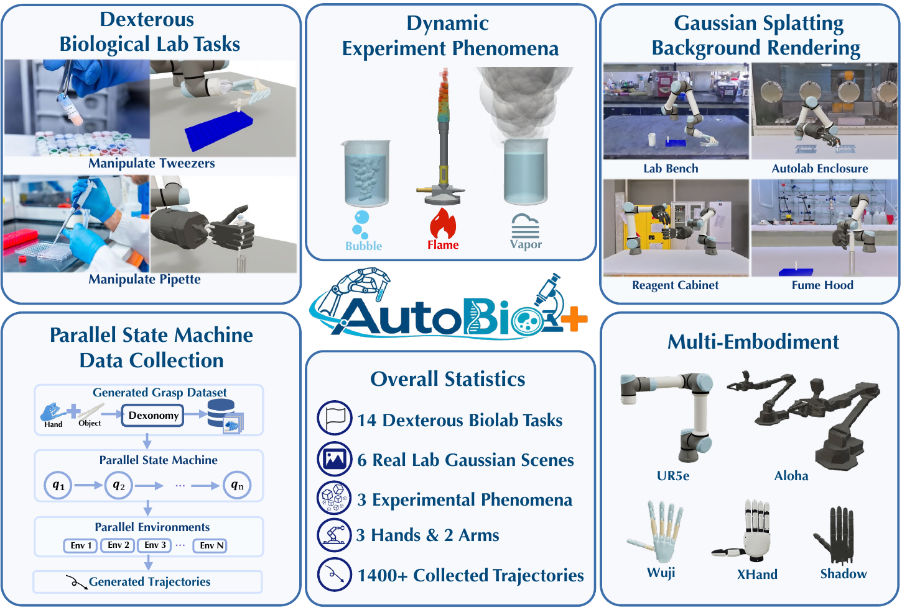
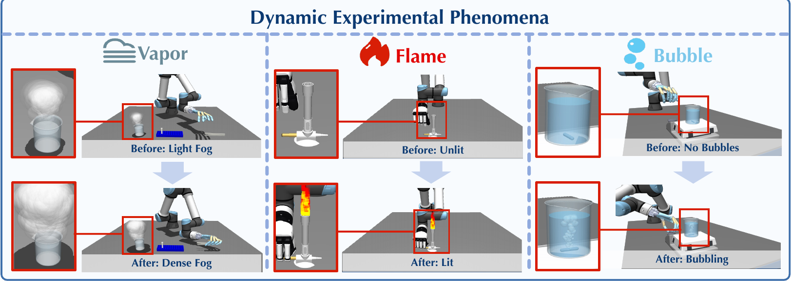
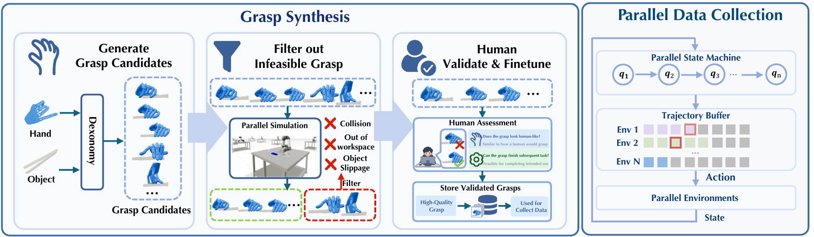
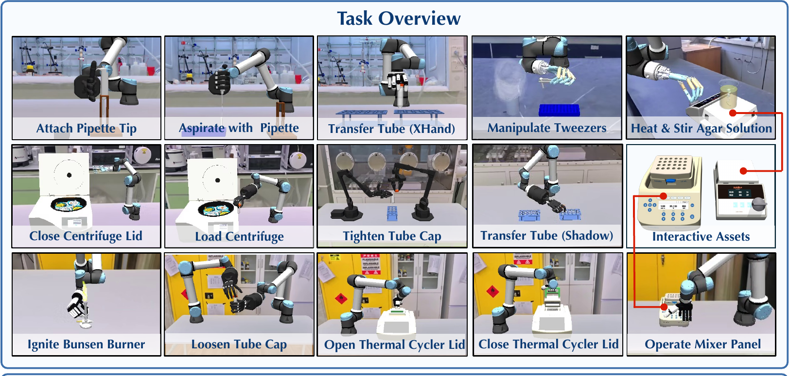
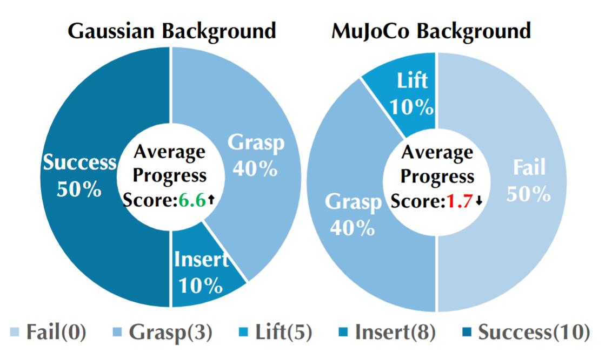

Summary Video
A short overview of the benchmark and its realistic laboratory environments.
docs/media/summary.mp4
Abstract
Automating biological laboratories requires robots to perform dexterous tool interactions under realistic visual conditions while handling dynamic experimental phenomena, presenting significant challenges for robotic manipulation. To enable systematic evaluation under these conditions, we introduce AutoBio+, a simulation benchmark and framework for dexterous manipulation in realistic biological laboratory environments. AutoBio+ comprises 14 tasks across 4 robot embodiments, spanning functional tool use, precision manipulation, language-conditioned visual grounding, and instrument operation. We introduce controllable dynamic experimental phenomena, including flames, vapor, and bubbles, to capture the evolving visual conditions of laboratory procedures. To further enhance environmental realism, we develop a hybrid rendering pipeline that integrates interactive simulated foreground objects with Gaussian-splatting backgrounds reconstructed from 6 real laboratory scenes. For efficient large-scale data generation and evaluation, we further build a parallel simulation framework on top of mjlab, proposing Parallel Finite-State Machine (PFSM) and integrating batched rendering with decoupled trajectory replay for demonstration generation and model-independent closed-loop policy evaluation. Our evaluation reveals substantial variation in policy performance across tasks, exposing distinct strengths and weaknesses of current manipulation policies. Real-world experiments further demonstrate a reduced sim-to-real gap, supporting the validity of AutoBio+ for realistic manipulation evaluation.
Method Overview
AutoBio+ brings visual realism and efficient evaluation into the same simulation loop.
Particle visual effects
Lightweight, controllable particles model flames, vapor, and bubbles while remaining decoupled from scene physics.
Hybrid rendering
Interactive MuJoCo foregrounds are composited with Gaussian-splatting backgrounds captured from real laboratories.
Parallel simulation
PFSM policies, batched rendering, and decoupled trajectory replay support efficient data generation and evaluation.
Dynamic Experimental Phenomena
The visual conditions evolve as the robot acts.

Gaussian Laboratory Scenes
Six Gaussian background videos paired with their associated benchmark tasks.
Parallel Simulation
Grasp Synthesis and Parallel Data Collection

Task Benchmark
Four capability categories cover the 14-task suite.

Functional Tool Use 02 tasks
Aspirate with Pipette Shadow
Manipulate Tweezers Wuji
Precision Manipulation 03 tasks
Tighten Tube Cap Aloha
Loosen Tube Cap Shadow
Attach Pipette Tip Shadow
Language-Conditioned Grounding 04 tasks
Load Centrifuge Shadow
Transfer Tube Shadow
Transfer Tube XHand
Operate Mixer Panel XHand
Instrument Operation 05 tasks
Ignite Bunsen Burner XHand
Close Centrifuge Lid Wuji
Heat & Stir Agar Solution Wuji
Close Thermal Cycler Lid XHand
Open Thermal Cycler Lid XHand
Task Visualizations
